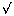

Dr. Dobb's Journal December, 2004
In theory, comparing two relational data sets is straightforward. The problem statement is simple enough: Given two data sets, A and B, measure how similar they are. But here is where the apparent simplicity begins to fade—-what does "similar" mean?
The definition of similarity depends on the sort of differences you want to capture. Two (or more) data sets can differ in both magnitude and content. For example, B may contain many more rows than A, and that is worth knowing, but the rows also may or may not contain combinations of values similar to those in A, and that is worth knowing, too.
If you want to capture such differences, you can start with a simple approach. Match up unique keys in the two tables, count the number of columns that contain unequal values, and report the average number of differences. Find the difference in the number of rows in each data set to capture any difference in magnitude. This will give you a rough idea of how similar two data sets are.
This approach may be sufficient for some data sets, but it has a few shortcomings. To begin with, it does not work when both data sets do not share common unique keys—-which rows do you compare? It also lacks a general scheme for comparing relative similarity in data sets of different size; the average column difference is data dependent.
Thus, in finding a solution to this problem, there are two competing goals—measure similarity without imposing requirements on the data (such as unique keys), and provide an intuitive way to represent the difference. It would also be nice if the solution requires only enough information about the data to make accurate measurements, and is therefore general enough to apply to a variety of data types.
In this article, I show how borrowing techniques from the field of Information Retrieval lets you measure the similarity between data sets efficiently, accurately, and with minimal development.
Information Retrieval (IR) is a field devoted primarily to efficient, automated indexing and retrieval of documents. There are a variety of sophisticated techniques for quickly searching documents with little or no human intervention. A survey of those techniques is beyond the scope of this article (see "Matrices, Vector Spaces, and Information Retrieval" by M. Berry, SIAM Review Volume 41, No. 2, 1999 for a great tour of them), but the common thread in many of them is that they are based on a geometric representation of data called the "vector space model."
In the vector space model, documents are represented by vectors (arrays of numbers) in a high-dimensionality vector space. This representation is possible by imposing a few simplifications on the putative notion of a "document." First, since most documents are simply ordered sets of words, ignore the word order and you are left with sets of words (sets that allow duplicates, that is). Next, to make things simpler still, replace each unique word with a word/frequency pair, where the frequency indicates the frequency of that word in the current document. Despite this seeming oversimplification, word frequency—without regard for order—still retains a significant amount of information about a document's contents.
Take this one step further and decouple the word-frequency pairs. An easy way to do this is to have a vector of words as your "dictionary." Then you can represent documents as integer vectors, where an entry at a given index contains the frequency in that document for the word at the same index in the dictionary. So if dict[5] in the dictionary is "hiking" and doc[5] in my document vector is "7," it means that the document represented by doc[] contains the word "hiking" seven times.
This is where geometry comes in. Now that you have a vector of n integers, you have a point in n-dimensional space. Consider a simple dictionary that contains only two words: "running" and "swimming." It might look like this:
dict[0] = "running"
dict[1] = "swimming"
Now imagine that you have a document (say a magazine article) that has the word "running" three times and "swimming" twice. That vector would look like:
doc[0] = 3
doc[1] = 2
Figure 1 provides a visual representation of this, which is a vector in a two-dimensional space.
Other documents with the same terms would be represented by vectors in the same space and would appear as other points on the 2D vector space. Documents that are similar, based on relative word frequency, appear closer to one another than those that do not. Therefore, you can use a couple of standard geometric measures to measure how "close" two vectors are, which is their respective documents' similarity: Euclidean distance and cosine.
Euclidean distance, which involves the square root of the sum of the squares of the differences (see Figure 2), is a good measure of the magnitude of the difference between the two documents. For example, if you have document A that contains "running" 20 times and "swimming" zero times, and another document B that contains "swimming" 30 times and "running" zero times, the two documents have a distance of about 36. If, on the other hand, document C contains "running" 15 times and "swimming" twice, the distance to A is about 5. Intuitively, this makes sense—documents that use the same words roughly the same number of times are probably more similar than those that don't.
This doesn't capture the whole picture though. In the same example, what if document B contains the word "running" 100 times? Intuitively, it should be very similar to document A because both documents are clearly more about running than anything else, but using the distance formula, you are still 80 units away. This is not right.
The cosine measure takes care of this. The cosine treats both vectors as unit vectors by normalizing them, then gives you a measure of the angle between the two vectors; see Figure 3. The notation ||x|| means the vector norm, which is xTx. Now revisit the aforementioned example. With vectors d1{20,0} and d2={0,30}, the cosine=0, which means these two vectors are perpendicular (regardless of their length). Table 1 contains the possible values for cosine and their directional meanings.
Similarly, suppose d1 represents a magazine article and d2 a book. With d1={3,2} and d2={305,220}, the cosine is 0.9993, which means these two vectors are pointing almost exactly in the same direction and, therefore, the two documents are similar in content. Intuitively, the cosine measure preserves the ratios of terms relative to one another.
There are a couple of items worth pointing out here. First, based on the descriptions above, cosine appears to be a much better measure. It provides an accurate, intuitive measure of similarity without regard for magnitude. But magnitude is important. If one data set is 10 times the size of the other (and this is something, based on the type of data you are dealing with, that you may want to measure), cosine will not tell you.
Second, there is one problem with using frequency as the numerical basis for this: What about frequently used words that carry little or no meaning? Words like "and," "or," "the," and so on, will have extremely high frequencies and therefore significantly affect the similarity measures, but tell you nothing about a given document. Not surprisingly, there are a number of weighting schemes used in IR that neutralize these terms so they don't skew the results. This will not be a problem in this article's techniques, but the schemes for dealing with these approaches are elegant.
Now that the basis for IR similarity measures has been set, you can investigate how to recast the data set similarity problem as a geometric problem.
As is often the case in programming and computer science, representing one problem as another enables a whole class of solutions.
Think of a relational data set as a document. Each unique column/value pair is a term and the number of occurrences of it in a given data set is its frequency. With a little bookkeeping code and a handful of simple data structures, you can use the geometric formulas just described to measure similarity between data sets.
Before you do anything else, figure out what your data sets look like. Determining which tables and columns you are going to compare will be (and should be) the most time-consuming task in this whole exercise. For simplicity, I assume you are comparing two identical tables. Additionally, the data sets in this article should be simple SELECT statements. You can, of course, include multiple tables in your data sets using joins, but doing so adds more complexity.
Just as in comparing documents, not all terms are useful. I mentioned earlier how words like "and" and "the" are useless when comparing documents. The same goes for data sets: If most records in a data set have the same value, then it does little good when comparing them. Unique terms, at the other extreme, are equally useless when comparing two data sets. To jump back to the magazine article analogy, suppose the "running" and "swimming" articles were written by different authors. If I know the first article contains the first author's name twice and the second one contains the second author's name three times, this tells me nothing about the similarity of the articles' content because they are unique to each document.
Apply this same intuition to data sets. Use columns that contain heterogenous, evenly distributed values, but that are not unique. For example, if one of the data sets you want to compare contains, say, 100,000 rows, a good candidate column for this technique may hold five or 10 different values, each with a significant number of rows. You can get a feel for data distribution with SQL's COUNT and GROUP BY clauses. Say you want to see the distribution of the TYPE column on a FIELD table; you could do it like this:
SELECT DISTINCT TYPE, COUNT(TYPE)
FROM FIELD
GROUP BY TYPE
This produces the breakdown of the data distribution in Figure 4(a). This data is sufficiently evenly distributed, though not perfect. It is somewhat skewed toward the TEXT, BOOL, and ID values, but there are enough of the other types to make it a useful column. For the sake of comparison, a column with poor distribution may look like Figure 4(b). This sort of distribution is not completely useless, but chances are that other columns have more meaningful data. The goal of this analysis is to find columns that characterize the data, and because of that, a column's usefulness is partially subjective. You know what the data in your table are used for, so it may be that a heavily slanted distribution is okay. Generally speaking, however, more evenly distributed column values contribute more to your similarity measures.
What I have described is a best-guess, eyeball approach to analyzing data distribution. If you want a solid mathematical measure of data distribution, see the accompanying text box entitled "Entropy."
Once you have examined the data distribution for each of the columns in your data sets, you should know which columns will be useful in comparing them. The next step is transforming this data into a geometric representation.
Before you use IR techniques on relational data sets, you have to transform the data into a different representation. Thus, this is the critical step in this exercise.
From the previous explanation of similarity measures, you already know that you need to convert this data into a frequency vector format. The pseudocode for doing so is straightforward:
for each row
for each column
make a key of the column name and value
add the key to the dictionary if it's not there already
increment the corresponding index in the doc vector
This algorithm uses two structures—a dictionary and an integer vector. The dictionary does two things. First, it keeps track of the terms. A term, for our purposes, is a unique column name/value combination. The dictionary has a single entry for each of them. Second, it makes manipulation of the document vectors easier and more efficient. Each index in the doc vector corresponds to a term in the dictionary.
There is one dictionary and as many document vectors as there are data sets to be compared. Build each document vector by examining each term in the data set, looking it up in or adding it to the dictionary and getting the index of it in the process, then incrementing the corresponding index in the document vector for each occurrence of the term.
All of this is easy to do with C# and a handful of the ADO.NET classes. My DataSource class (available electronically; see "Resource Center," page 5) uses the classes OdbcConnection, OdbcCommand, and OdbcDataReader in the System.Data namespace to do all the database work, and ArrayLists for the dictionary and document vectors. Take note of the SqlToDocument method. It executes a SQL statement against the current data source, then converts the results to a dictionary/frequency vector format. Listing One is the most important part of the code.
Create each of your document vectors with SqlToDocument like this:
myDS1.SqlToDocument( sql1, dict, doc1 );
myDS2.SqlToDocument( sql2, dict, doc2 );
Once you have created both document vectors, the transformation is complete. Now you have two frequency vectors that are in sync with the dictionary, or to put it another way, the indices of each vector refer to the same term. Measure their similarity with Euclidean distance or cosine:
double dist = ds1.Distance( doc1, doc2 );
double cos = ds1.Cosine( doc1, doc2 );
At this point, you have your distance or cosine measure. So what now? It depends on what types of data differences you want to measure.
If you use the techniques described so far, you have two numbers, distance and cosine, that each tell something about the difference between the data sets. Distance indicates the magnitude of the difference and cosine reports the similarity of the data in each of the data sets. Both numbers describe important aspects of the relationship between data sets.
Consider the case just described, where you have a magazine article and a book about the same topic. In terms of data sets, the "book" data set would have rows with the same combination of values, but with more of them. The corresponding vectors may look like Figure 5.
Cosine tells you that the vectors point in roughly the same direction and that the documents are therefore similar in content, and distance will tell you that one is much larger than the other. You can use the two values together to infer the relationship between the two data sets.
When you use more than three terms, the corresponding vectors are not something you can visualize, but the calculations work regardless. Cosine and Euclidean distance work for any number of dimensions.
One technique won't work for everybody so experiment and see what sort of calculation makes the most sense for your data. For example, for one of my applications, I had to use a different approach to distance by normalizing it to some basis and then using that normalized value. I did this by using one vector as the baseline and calculating its distance from the origin. I then calculated the distance between the two vectors and reported that distance as the percentage of the baseline distance. This let me get an idea of what a value for distance means, in terms of the size of the baseline vector.
You can use this and similar approaches based on the type of data you are using and the kinds of differences you want to measure. The two complementary measurement calculations permit effective comparison of data quantity and quality, and with some experimentation, you should be able to tailor it to suit your particular needs.
DDJ
while (reader.Read())
{
for (int j = 0; j < reader.FieldCount; j++)
{
name = reader.GetName( j );
val = reader.GetValue( j ).ToString();
key = name + "|" + val;
idxDict = dict.IndexOf( key );
if (idxDict < 0)
{
idxDict = dict.Add( key );
doc.Insert( idxDict, 1 );
}
else
{
idxKey = dict.IndexOf( key );
freq = (int)doc[idxKey];
freq++;
doc[idxKey] = freq;
}
}
}
Back to article